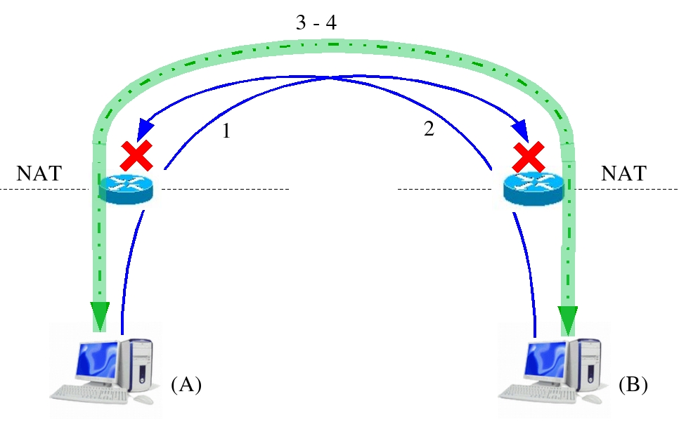
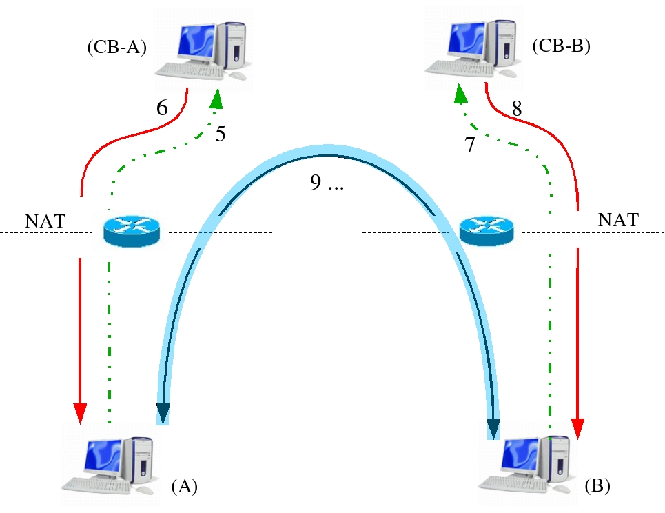

Next:
TCP Traversal without Spoofing
Up:
TCP NAT Traversal Protocol
Previous:
TCP Traversal with Spoofing
Contents
TCP Traversal with Spoofing from well-known machine
Figure 6.3:
Figure 6.4:


Gaballo Luca 2005-06-30